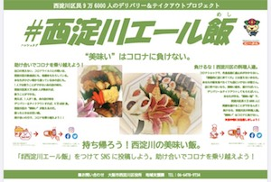

Home
Member
Works
Contact
✖︎Close..
塚本テイクアウトプロジェクト参加店
コロナの影響により営業に悩む飲食店さん、また感染拡大を防止する為の対策として
少しでも多くの飲食店さんがテイクアウトのサービスを行えるようにサポートするプロジェクトです。
＜塚本エリア参加店一覧＞
#西淀川エール飯

＜参加エリア一覧に戻る＞
『一日でも早く皆さまに、また『安心』して御来店頂ける日が来るのを信じて。』